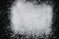

|
|
(For further information on spectroscopy, see:
http://speclab.cr.usgs.gov)
TITLE: Oligoclase HS110 Plagioclase DESCRIPT
DOCUMENTATION_FORMAT: MINERAL
SAMPLE_ID: HS110
MINERAL_TYPE: Tectosilicate
MINERAL: Oligoclase (Plagioclase, Feldspar group)
FORMULA: (Na,Ca)Al(Al,Si)Si2O8
FORMULA_HTML: (Na,Ca)Al(Al,Si)Si2O8
COLLECTION_LOCALITY: Mitchell Co., New York
ORIGINAL_DONOR: Hunt and Salisbury Collection
CURRENT_SAMPLE_LOCATION: USGS Denver Spectroscopy Laboratory
ULTIMATE_SAMPLE_LOCATION: USGS Denver Spectroscopy Laboratory
SAMPLE_DESCRIPTION:
Most analyses contain small amounts of Na, but a complete solid solution series is possible from orthoclase toward intermediate albite. Crystallizes at intermediate temperatures and has a partially ordered Al-Si distribution.
Sieve interval 74-250µm.
"Oligoclase's are composed of from 70 to 90% albite and 30 to 10% anorthite. This pure white sample contains very little muscovite impurity. Its spectrum is quite flat with broad 1.4µm, 1.9µm, and weak 2.2µm features. The 1.9 band is indicative of the presence of a small amount of included H20, while the 2.2µm feature is due to the OH stretch-AlOH bending combination."
Hunt, G.R., J.W. Salisbury, and C.J. Lenhoff, 1973, Visible and near-infrared spectra of minerals and rocks: VI. Additional silicates. Modern Geology, v. 4, p. 85-106.
IMAGE_OF_SAMPLE:

END_SAMPLE_DESCRIPTION.
XRD_ANALYSIS:
40 kV - 30 mA, 6.5-9.5 keV
File: oligo110.mdi (quartz smear mount)
References: Huebner's reference patterns; Borg and Smith (1969); Kroll (1983)
Found: Plagioclase feldspar (oligoclase or intermediate albite), minor quartz
Comments: Sharp peaks show good resolution of alpha1-alpha2 components,
suggesting good crystallinity and homogeneity of compositional and structural
state. Peaks assumed to be the quartz (100) and (101) were used as an internal
standard. All other peaks were indexed following Borg and Smith (1969) for
oligoclase. Refinement of 43 reflections gave a=8.169(2), b=12.846(2), c=7.140(2)
Angstroms, alpha=93.99(3), beta=116.47(2), gamma=88.87(2). Five unit cell
parameters and the value of delta2theta(1-31)-(131) corresponded to a bulk
composition less than 30% anorthite component (The a dimension indicates An=60%). The cell
dimensions do not constrain the structural state. If HS110 is an alkali feldspar,
the criteria of Wright (1968) indicate composition Ab96Or4 and intermediate
structural state. Line- and profile-based search-match routines return ordered oligoclase
(41-1480) and disordered albite (10-0393) as the most likely hits. Visually, the
ordered oligoclase gives a distinctly superior fit.
END_XRD_ANALYSIS.
COMPOSITIONAL_ANALYSIS_TYPE: None # XRF, EM(WDS), ICP(Trace), WChem
COMPOSITION_TRACE:
COMPOSITION_DISCUSSION:
No compositional analyses.
END_COMPOSITION_DISCUSSION.
MICROSCOPIC_EXAMINATION:
Clear to white translucent. 0% opaque. No contamination visually apparent.
END_MICROSCOPIC_EXAMINATION.
SPECTROSCOPIC_DISCUSSION:
END_SPECTROSCOPIC_DISCUSSION.
SPECTRAL_PURITY: 1c2b3b4_ # 1= 0.2-3, 2= 1.5-6, 3= 6-25, 4= 20-150 microns
| LIB_SPECTRA_HED: | where | Wave Range | Av_Rs_Pwr | Comment |
|---|---|---|---|---|
| LIB_SPECTRA: | splib04a r 3538 | 0.2-3.0µm | 200 | g.s.= |
| LIB_SPECTRA: | splib05a r 5014 | 0.2-3.0µm | 200 | g.s.= |
| LIB_SPECTRA: | splib06a r 16226 | g.s.= | ||
| LIB_SPECTRA: | splib06a r 16239 | g.s.= |
{kind=link}